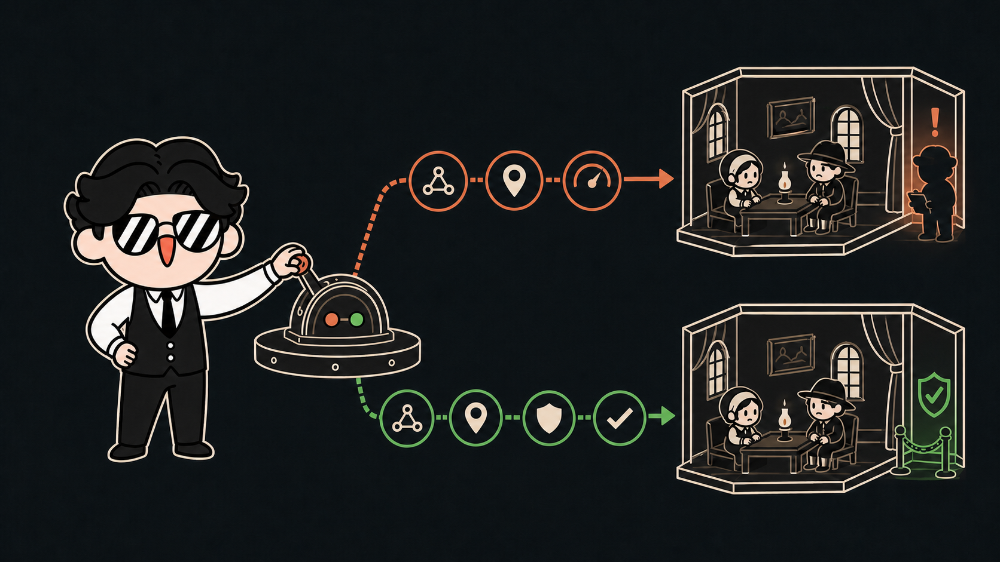
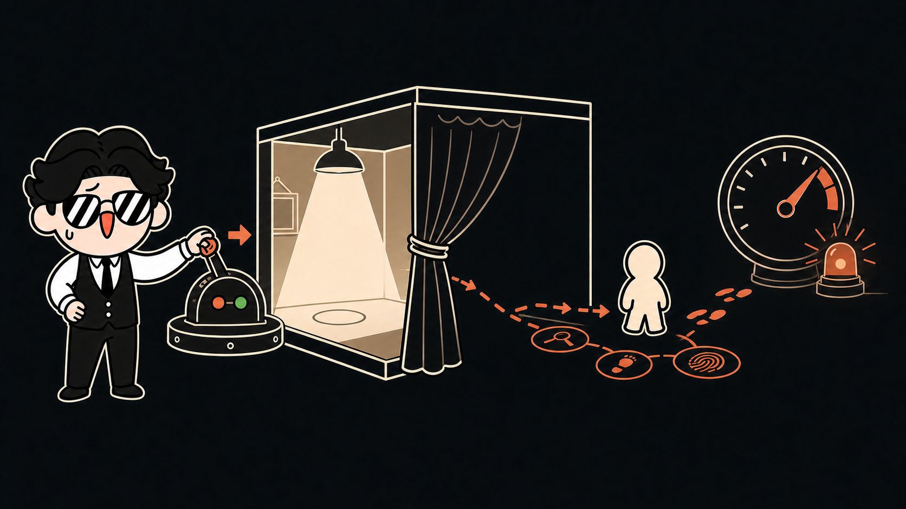
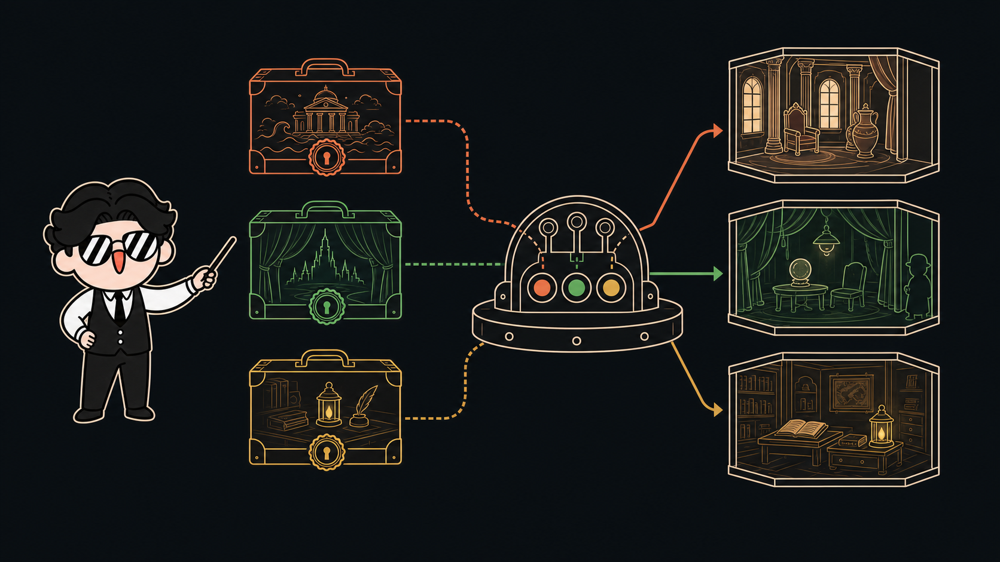

The room falls silent. She smiles, already certain of the secret she never learned.
01 / 08
A familiar creator-side shorthand
Codex
can't write?
“Claude writes.Codex builds.”
?
What if the real failure begins before the sentence?00:00
02 / 08
Fluent failure
A better paragraph cannot repair a world that forgets.
×
KnowledgeWho is allowed to know?
LEAKED×
ConsequenceWhat did the choice cost?
ERASED×
AgencyWhy would this character act?
BORROWEDFluent prose can still collapse character knowledge and causality.00:08

03 / 08
Penelope Ontology
Give Codex a world it must obey.
Resolve knowledge, motives, relationships, risks, and costs before the next scene is written.
The creator owns direction. The world answers before prose.00:16

04 / 08
The Night of the Scar · Book 19
You removed the witness.
You created an investigator.
CREATOR CHOICE
Send Melantho away to protect the stranger's identity.
Privacy in the roomMelantho leaves the scene.
+1Melantho remembersExclusion becomes motive.
ARMEDOffstage investigationSuspicion rises without a knowledge leak.
+1The request succeeds—and its social cost becomes the next story pressure.00:33
05 / 08
Fork Compare
Same checkpoint. Different world line.
CHECKPOINT
01
01
Plan Compromised
Canon Contained
Penelope compares changed state—not paragraph similarity.00:46

06 / 08
Portable World Packs
Ithaca is one world.
It is not the engine.
The OdysseyBOOK 19 · HIDDEN IDENTITY
The Wonderful Wizard of OzCHAPTER XV · PUBLIC ILLUSION
Your WorldWORLD FORGE · FIVE-SCENE EPISODE
The cast, secrets, actions, and endings change. The workbench does not.00:56
08 / 08
P
Penelope Ontology
Fork the world, not just the paragraph.
penelope-ontology.vercel.app